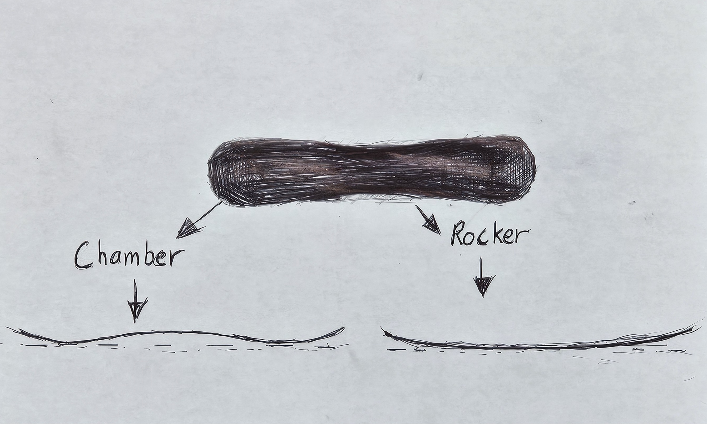

System MTN Snowboard
Image via Amazon • Click to view
Cost: $300
Rating: ★★★★☆
Looks: Clean, minimalist graphic - really sharp design.
Ride Feel: Light and floaty with good grip. Smooth in powder.
Tech: CRCX camber for fewer edge catches, 3D poplar core adds spring.
Best For: New and intermediate riders who want to progress.
Includes: Summit bindings - comfy, padded, easy to adjust.
Downsides: Not ideal for big park jumps. Scratches easily.
David Approved
The System MTN Snowboard offers a great entry point into snowboarding, especially for riders looking for versatility on the mountain. With a sleek and sick graphic that appeals to minimalist style, this snowboard doesn’t just ride well, it looks the part, too. Read for some serious grinding!

At 300 bucks, it comes in well below the cost of many high-end boards, but don’t let the price fool you. The MTN features a CRCX camber profile that combines cambered contact points with a rocker dominant shape. In simple terms, this helps reduce edge catches and enhances float in powder. For beginners, this means fewer faceplants and more time upright. For intermediate riders, it means you can press and carve confidently.
The board is made from poplar wood and features a 3D core construction, which adds spring and responsiveness. I noticed right away how light it looks without sacrificing strength. Poplar’s known for its lively ride, and when paired with high-density stringers, it really shines when you want to pop off side hits or flow through trees. The Summit bindings were a pleasant surprise as well being lightweight, easy to adjust, and the EVA padding adds noticeable comfort during long runs.
That said, this setup isn’t ideal for serious park rats or pro-level carvers. The flex is medium soft, which limits stability at high speeds. Advanced riders who enjoy aggressive downhill bombing might feel underwhelmed. Additionally, the graphic, while clean and stylish, isn’t super scratch-resistant. After a few sessions, minor dings and scuffs will become visible.
Still, for riders looking to hit groomers, dip into powder, or cruise the resort, this board hits a sweet spot. It blends approachability with just enough performance edge to grow with your skills. Whether you're shredding fresh snow or just learning to link turns, the System MTN is a solid companion.
Momentum Harness Kit

Image via Amazon • Click to view
Cost: ~$90
Rating: ★★★★★
Includes: Harness, chalk bag & ball, ATC device, locking carabiner.
Comfort: Dual Core padding feels great for long sessions.
Ease of Use: trakFIT legs are fast to tighten. Everything is beginner-ready.
Trust Factor: Black Diamond quality - works for gym or outdoor climbing.
Limitations: Not for expert multi-pitch. ATC is basic, chalk bag is decent.
Rocky Approved
Climbers know that gear isn’t just about performance. It’s entirely about safety, comfort, and ease of use. The Black Diamond Momentum Climbing Harness Package delivers impressively on all three, making it a no brainer for beginners and recreational climbers alike.
For about 90 bucks (often cheap from sales), this package comes fully loaded: the Momentum harness, a chalk bag, chalk ball, a locking carabiner, and the ATC belay device. You’re essentially ready to walk into your local gym or crag and get climbing. The harness itself is where this bundle really shines. With Dual Core Construction, it disperses pressure evenly around your waist, and the adjustable leg loops (trakFIT system) make finding a snug fit painless. Whether you’re climbing indoors or at the crag, the harness stays comfortable, even during long belays or just hanging while being taken down.
The ATC belay device and carabiner are simple, but that’s part of their charm. They’re reliable, easy to use, and perfect for learning the ropes, whether you’re top roping or just starting to lead. The chalk bag and chalk ball? They’re fine for now, though you might want to upgrade to better brands like magdust (I’m a big Magnus fan) later if you start climbing more seriously.
One of the biggest strengths of this package is its convenience. It removes the guesswork from assembling your first climbing kit. Everything fits together well, and Black Diamond’s reputation for safety and reliability means you’re not cutting corners with lower-tier gear.
Of course, experienced climbers might find the ATC device limiting compared to more advanced assisted braking devices like the Petzl GriGri. Also, the Momentum harness lacks extra gear loops or ice clipper slots, so it's not ideal for multi-pitch trad or alpine climbing.
But for 90% of recreational climbers, especially beginners, this kit checks all the boxes. It’s comfortable, intuitive, safe, and affordable. And that peace of mind is invaluable when you’re trusting a few straps and carabiners with your life on the wall.